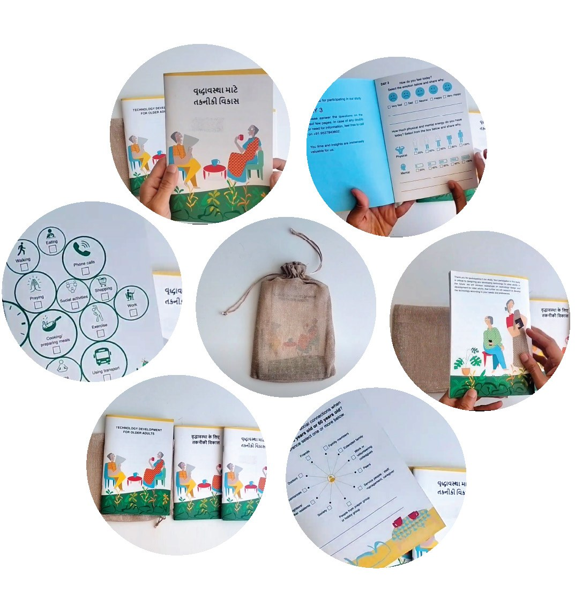

A reflection toolkit · when health changes
When health changes, the hardest moments often happen at home.
Midstream is a reflection toolkit for people navigating a serious or changing health situation, their families, and the clinicians who care for them. It helps people put into words what a change is touching in their lives.
Nine currents can run under one small moment. Choose one to see the card behind it, and the question it becomes for Elena.
Since her health changed, Elena’s daughter has moved in to help. Elena keeps correcting how her pillows are arranged, and sends help away. Her daughter hears a complaint about pillows.
For most of her life, Elena looked after everyone else. Being the one who cares for the family may be part of how she knows who she is.
Families and care teams usually see the surface. The toolkit helps people find and name what is underneath, at their own pace and in their own words.
The toolkit
A booklet for home, cards for conversation, and a map to share.
Alongside existing tools
Earlier, and closer to home.
Tools such as the Go Wish cards and the Serious Illness Conversation Guide help people and clinicians talk about goals of care and end-of-life preferences.
Midstream would work before and alongside those conversations. It focuses on the everyday changes in roles, routines and relationships that come with a change in health, and gives people words for them.
The pilot
Built with a care team, then tested at home.
A proposed six-month pilot: co-design with clinicians and families, a small pilot at home, then a revised toolkit.
Research foundation
Based on a booklet tested with older adults.
The toolkit builds on research on how people see themselves as they age, and on a reflection booklet that all 24 participants in our study completed.
Help shape the toolkit.
If you care for people facing a change in health, or are going through one yourself, we would like to hear from you. Write to neetakhanuja@gmail.com.
The toolkit
Three materials, used at the person’s own pace.
A booklet to complete at home, cards to start conversations with family or a care team, and a one-page map in the person’s own words.
The reflection booklet
Tested at home with older adults.
The toolkit adapts the Aging Reflection Probe, a seven-day booklet we designed and tested with older adults. Each day covers one part of life. Each day starts with a quick check of mood and energy, and every activity offers tick-box options for days when writing is hard.
In our study with 24 older adults in urban India, all 24 returned completed booklets. Participants wrote in the language they preferred, and one participant who could not write after an injury answered with the tick boxes.
The photo shows the original probe. A version for changing health would be designed with clinicians, patients and families.

The cards
One card, one part of life.
Each card opens one of nine parts of life, such as feeling valued, making decisions, or changes in the body. A family member, a clinician or the person themselves can use a card to start a conversation from a small, everyday moment.
The map
What matters, in the person’s own words.
At the end, the person fills in a one-page map: the parts of life the change is touching, what matters most to them now, and what they want their family and care team to know.
They decide whether to share it, and with whom. They can bring it to an appointment.
Designed with care
How the toolkit treats people.
A proposed six-month pilot
Built with a care team, then tested at home.
The toolkit would be designed together with clinicians, patients and families, then used at home by a small number of families between visits.
A proposal for discussion. The plan would follow the care team’s guidance and ethics review.
What the pilot would show
Questions to answer together.
Interested in working together?
We are looking for clinicians, social workers, chaplains and family caregivers who would like to shape the toolkit.
Write to neetakhanuja@gmail.comResearch
Nine parts of how we see ourselves.
How people see their own aging is linked to their physical, emotional and cognitive wellbeing. These views take shape during changes in life, including changes in health.
Research on self-perceptions of aging describes nine aspects. The toolkit uses all nine, described in plain language, so a conversation can reach the parts of life a change touches, even when the person does not name them.
Earlier work
A probe people completed at home.
The Aging Reflection Probe was a seven-day booklet used with 24 older adults across four living contexts in urban India. All 24 returned completed booklets and took part in follow-up interviews.
The study suggests that a printed booklet, flexible ways to answer, and a choice of language made it easier for people to take part.
Publication
Khanuja, N., Nisi, V. and Forlizzi, J. Designing Aging Reflection Probes to Elicit Self-Perception of Aging (SPA) Beliefs of Older Adults in India. ACM DIS 2025. doi.org/10.1145/3715336.3735430
Limits
What still needs testing.
The nine aspects come from aging research. Whether the toolkit helps people living with a change in health, and how it fits with clinical care, still needs testing. The pilot is the first step.
The toolkit organizes reflection and conversation. It is not a clinical or diagnostic instrument.
Who is behind this
Developed by Neeta Khanuja, designer and HCI researcher · neetakhanuja.com